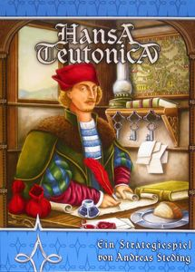
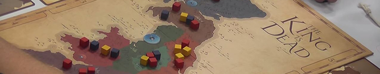
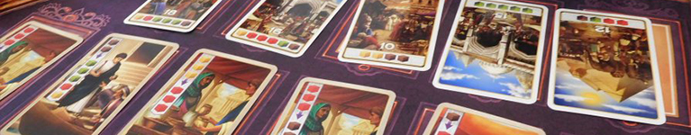
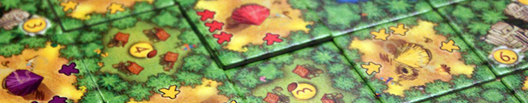
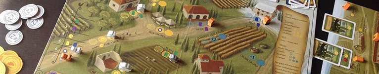

Perché limitarsi ad un gioco da tavolo quando puoi avere una birra e un gioco da tavolo?
Lasciamoci per una volta alle spalle il mondo dell’abbinamento con il cibo e avventuriamoci in uno del tutto inesplorato, quello in cui sono i giochi da tavolo ad essere accompagnati dalla cervogia.

La storia ci insegna che nella Germania del ‘400 vennero fondate società di mercanti con l’intenzione di commerciare con le città straniere e acquistare sempre più privilegi per i propri membri. Questo titolo ci porterà a rivivere le difficoltà che queste corporazioni affrontarono nel cercare di raggiungere le nuove città, i sabotaggi organizzati dai concorrenti e sottolinea che l’attacco è pur sempre la migliore delle difese. Il commercio e l’interazione con il diverso hanno sempre portato a novità come nel caso dell’incontro della maestria birraia ceca con la mentalità tedesca: la German Pils.
Questo stile, nato a fine ‘800, differisce dalla propria madre per l’utilizzo di luppoli tedeschi, presentando un colore che va dal giallo molto chiaro ad un oro intenso. Il corpo leggero, delicati sentori di miele e spezie sia al naso che in bocca, rendono questo stile molto semplice da bere.
Birra consigliata: Bugatina del Birrificio Leder

Non importa che voi impersoniate un leale cavaliere, un lord doppiogiochista oppure un’ambiziosa donna della nobiltà, vorrete potere, tanto potere, sempre più potere. Per mezzo della diplomazia e non la conquista, i giocatori saranno portati a utilizzare il proprio potere per beneficiare su alcune fazioni, e ottenere così influenza su di esse. Attorno a un tavolo, nel periodo caotico successivo alla caduta di Re Artù in cui si devono affermare le nuove potenze che guideranno questi territori, i momenti dedicati alla preparazione di strategie, patti e alleanze non possono che essere accompagnati da una session beer, in questo caso una Scottish Ale.
Questa birra si presenta scura ma pulita, con leggere note tostate e di frutta secca, semplice da bere. Alcune versioni possono avere dei sentori affumicati.
Birra consigliata: Nociva del Birrificio Bionoc’

“Caricate i cammelli che dobbiamo partire” disse il cammelliere alla carovana. Curcuma, zafferano, cardamomo e cannella sono le merci in questione che sarà possibile comprare e scambiare con il solo fine di controllare alcune città e diventare il capo carovana più influente. Le spezie sono tuttora utilizzate nei modi più disparati possibili, dalla cucina alla pulizia dei tappeti. Ovviamente, anche nell’atto di produzione di birre se ne includono, dando vita a svariati generi, tra cui il Saison.
Questo stile, nato come una birra estiva in Belgio, ha spesso note speziate dovute all’aggiunta di coriandolo, buccia d’arancia, ma anche cumino, cannella, pepe e molto altro. La birra può presentarsi molto chiara fino ad arrivare ad un ambrato marcato. Può risultare torbida a causa della presenza di frumento o di farro. La complessità aromatica è data anche dalla presenza di un lievito molto caratterizzante.
Birra consigliata: Saison del Birrificio 5+

Capi tribù aztechi che, coltivando e commerciando il frutto degli dei, dovranno cercare di far prosperare i villaggi della propria tribù. Il cacao, storicamente parlando, veniva utilizzato sia dal punto di vista religioso con sacrifici a dei in cambio di terreni fertili, sia come moneta di scambio. Oggi questo ingrediente ha preso piede anche nella produzione di birre, le Chocolate Stout.
Sebbene non esista un vero e proprio stile con questo nome, questo ingrediente viene spesso aggiunto per impreziosire la birra con aroma e sapore di cioccolato. La birra si presenta nera, impenetrabile, e la presenza di malti tostati e fave di cacao donano spesso un aroma e un gusto intenso di caffè, cioccolato e frutta secca.
Birra consigliata: Guna del Birrificio Rethia

Quattro stagioni, tre campi e la voglia di sporcarsi le mani per produrre uno dei migliori vini che si possano mai assaggiare. Tanto nella vita reale, quanto in questo titolo, non è semplice decidere come organizzare il lavoro nel corso dell’anno, se preferire la certezza di un raccolto oppure tentare la sorte per averne uno più abbondante. I nostri avi hanno sicuramente fatto le scelte migliori portato il vino italiano ad essere conosciuto in tutto il mondo. L’italia, negli ultimi anni, si sta facendo largo nel panorama brassicolo con uno stile di birra tutto suo: l’Italian Grape Ale.
Questo stile intreccia il mondo della birra con quello del vino, utilizzando per la sua produzione una parte di mosto tradizionale, derivato dai cereali, e una parte di mosto d’uva. Il colore, il profumo e il gusto dipendono molto dal tipo di uva utilizzata.
Birra consigliata: Marzarimen di Klanbarrique